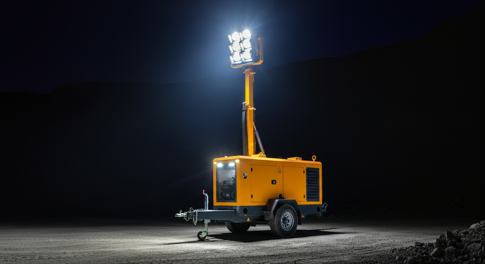
Know where everything is — always
Up to 40% less time searching for assets
- Live map for assets & personnel
- Zone & geofence instant alerts
- No more radio calls to find equipment
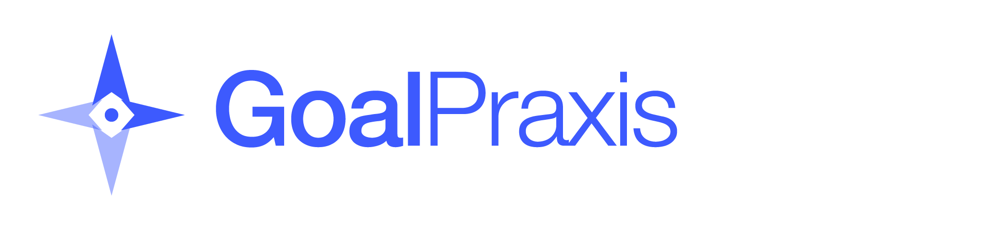
MinePulse Launch Narrative DeckClient Value Driven
GoalPraxis - MinePulse helps mining leaders convert field activity into faster decisions, stronger control, and quantifiable operational gains.

Powered by Tektelic infrastructure
What MinePulse delivers

Up to 40% less time searching for assets
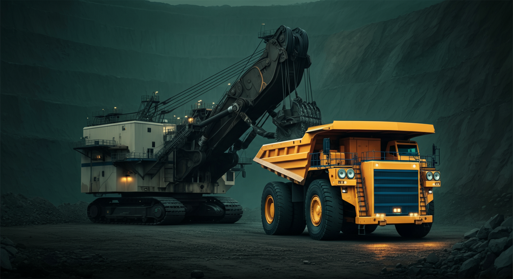
Up to 20% improvement in asset utilization
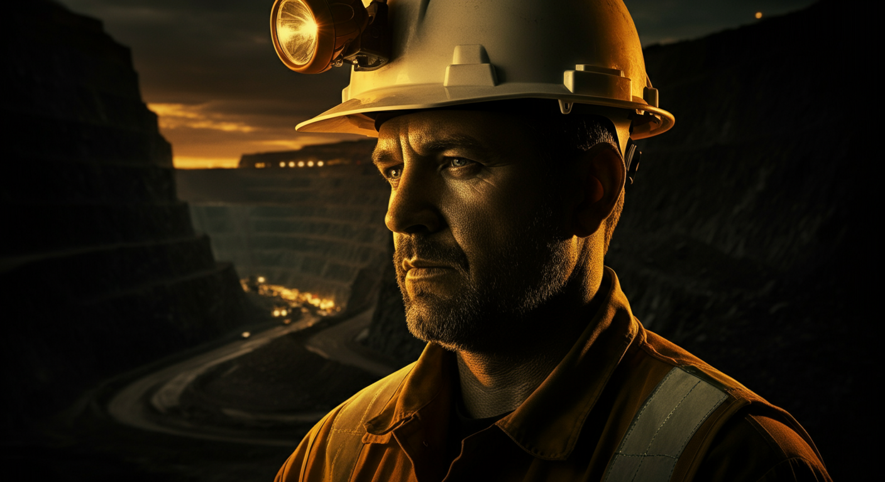
Real-time event response in seconds
Savings command panel
This dashboard highlights where value leaks today and where MinePulse can recover productivity, cost, and safety performance.
Estimated Year-1 savings opportunity
How it works
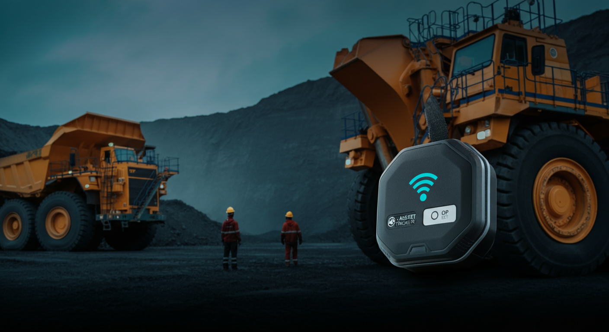
Rugged trackers and sensors on assets, vehicles, and personnel. IP67-rated. Long battery life. No site wiring needed.
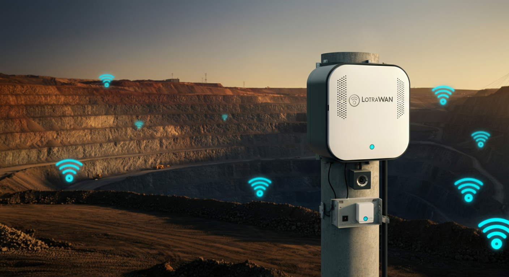
TEKTELIC carrier-grade LoRaWAN gateways provide seamless coverage across pit, plant, and logistics zones.
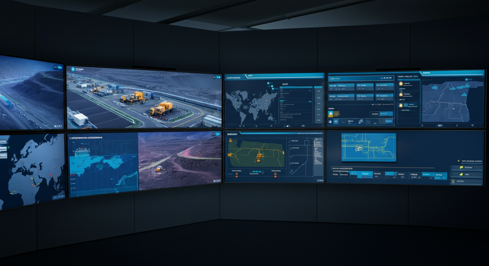
MinePulse transforms raw signals into live maps, utilization dashboards, alert workflows, and KPI reports for every level of your operation.
Live operational view
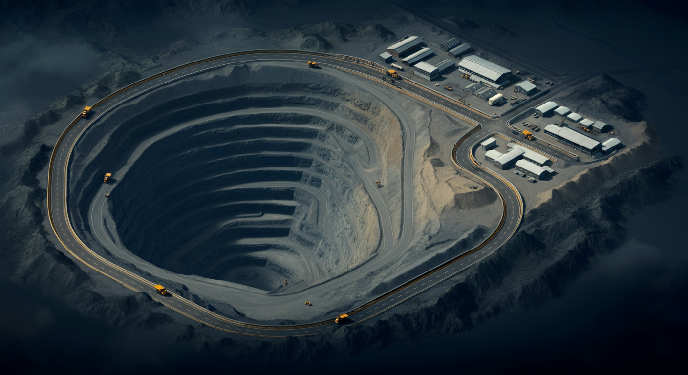
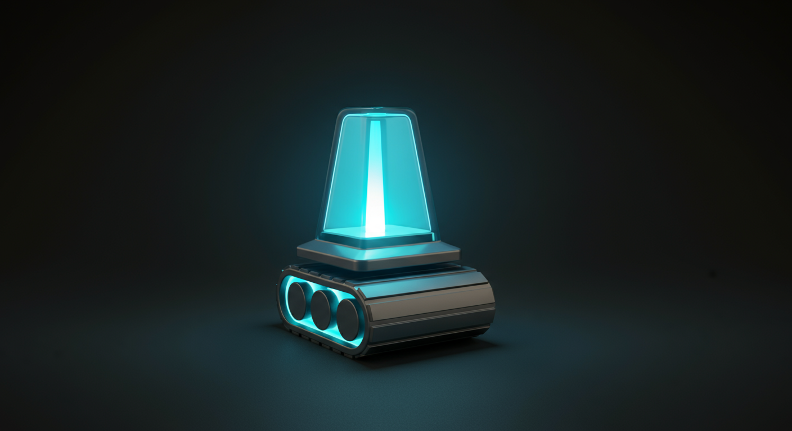
41%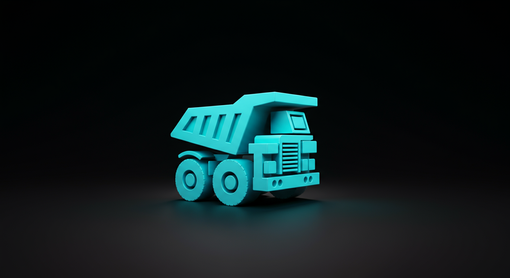
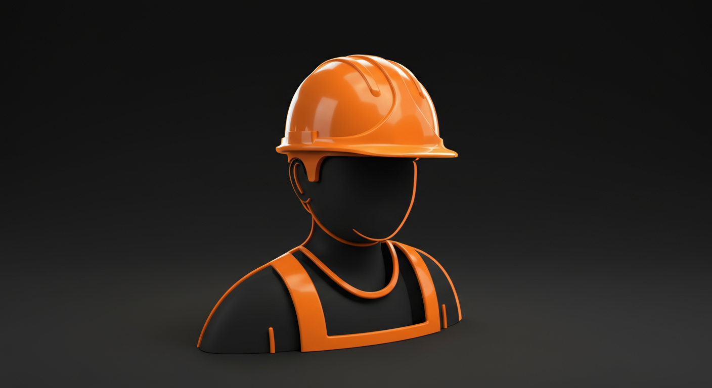
Every tracked asset visible in real time — location, status, and zone assignment at a glance.
Shift-by-shift usage telemetry. Spot idle assets and inefficiencies before the next day begins.
Zone breaches, proximity events, and emergency workflows — all surfaced in one live feed.
Pilot-in-a-Box
Site mapping, gateway placement, first tracker setup, and baseline KPI capture. Zero disruption to operations.
KPI baseline establishedExpose first savings opportunities with utilization and movement intelligence. Data-backed decisions start here.
First savings report readyExpand tags, automate alerts, and lock monthly operational review cadence. Build the business case for full deployment.
Expansion plan deliveredWhy GoalPraxis
We don't just deploy hardware. We become the operational intelligence partner that helps your team extract measurable value — pilot to portfolio.
Global IoT technology depth + local mining execution capability
Practical rollout aligned to operational reality — not enterprise complexity
Fast start via focused pilot, clear path to regional scaling
One narrative from field events to management decisions
Strategic opportunity
Ready to start in Peru with a strategic pilot and scale across regional mining operations.
Powered by TEKTELIC · Built for LATAM mining